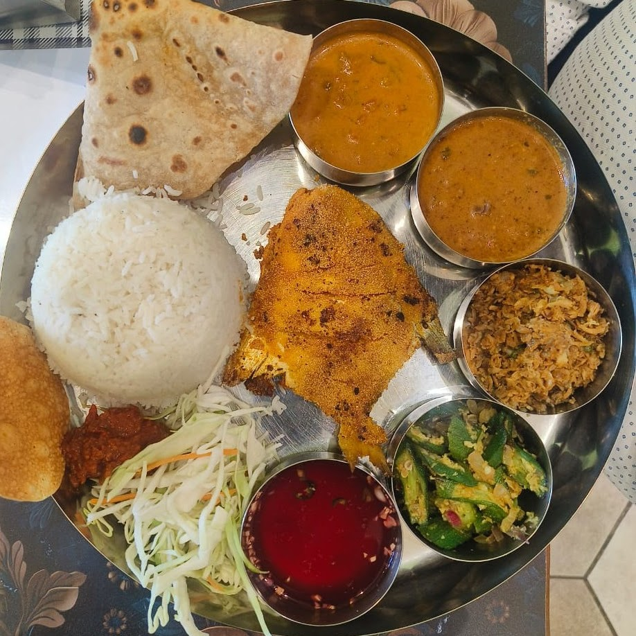
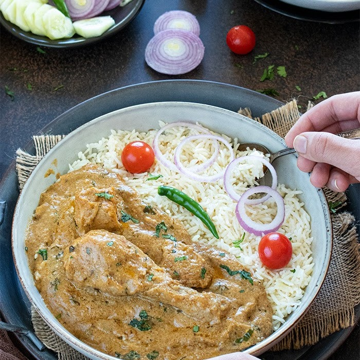
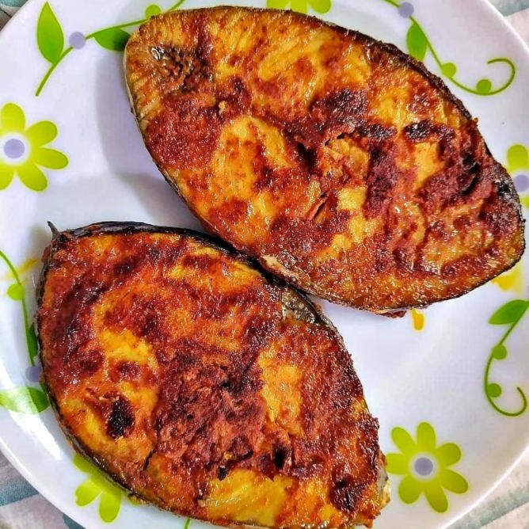
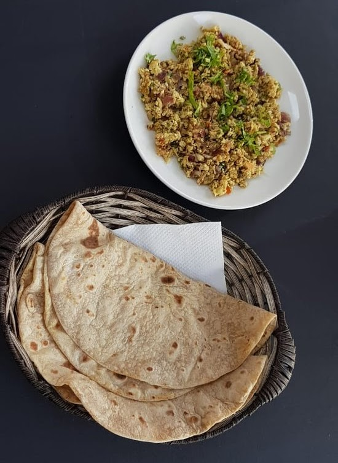
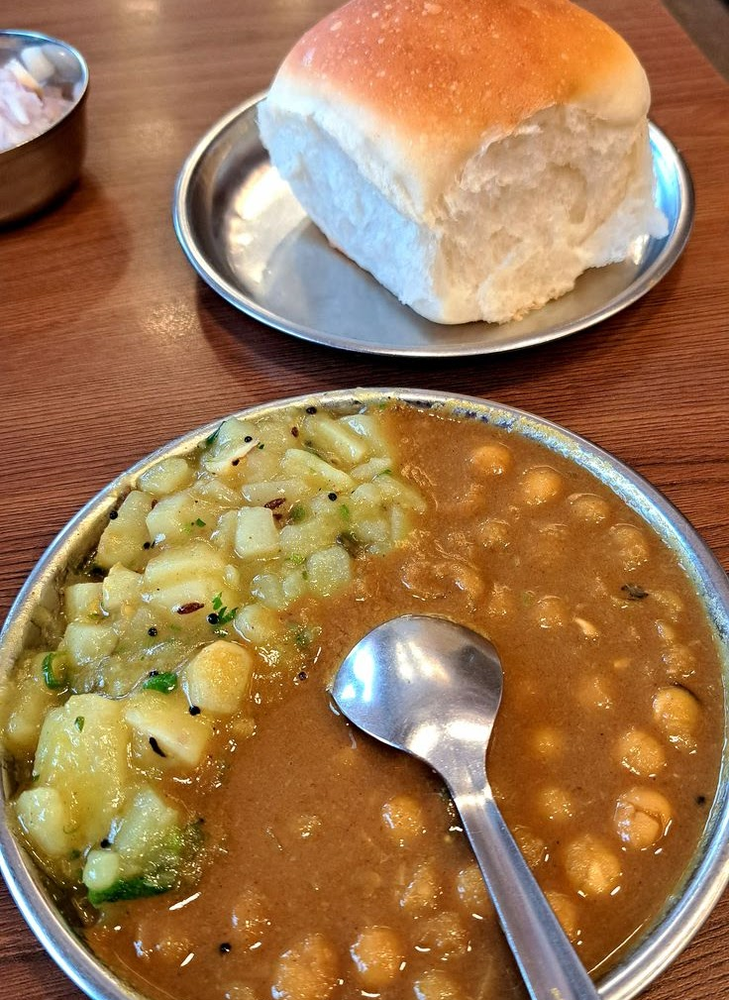
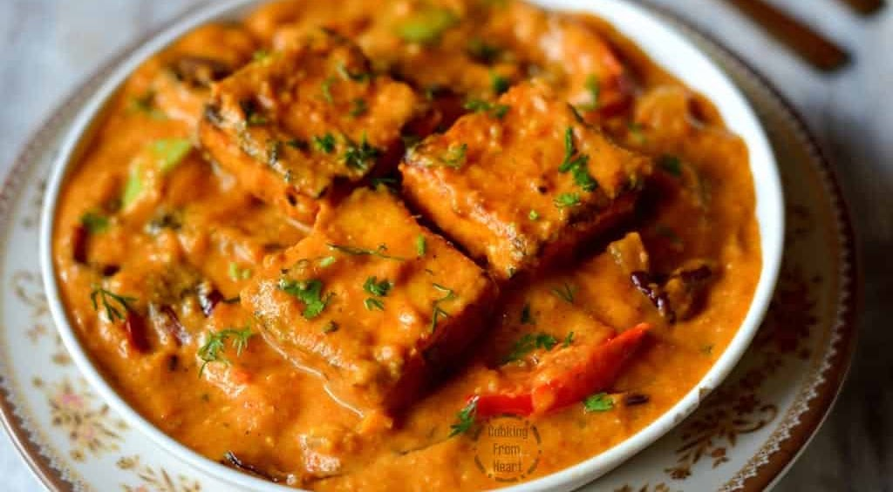
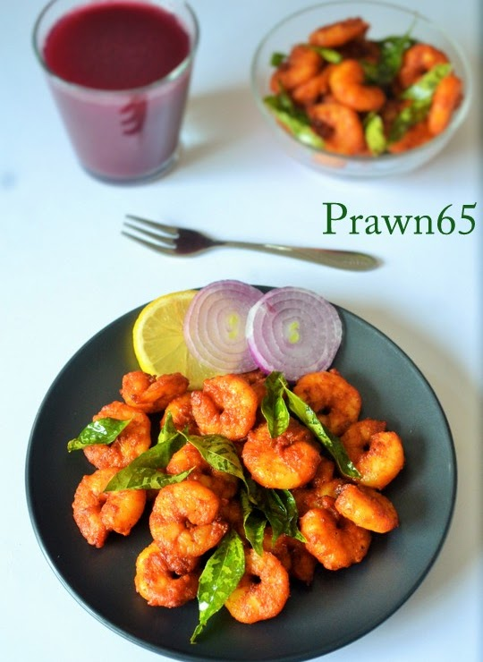
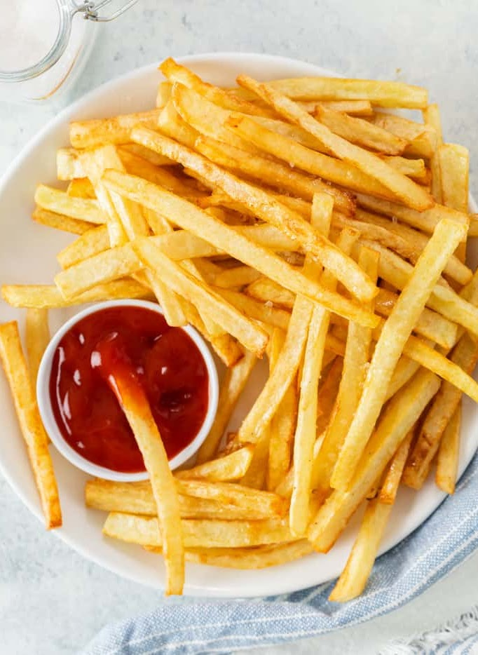
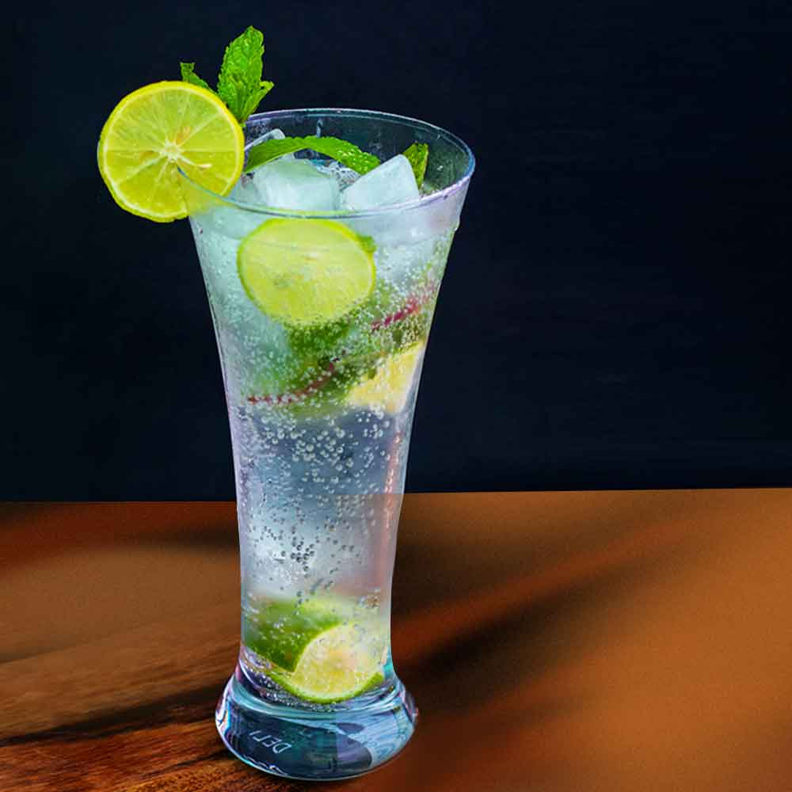
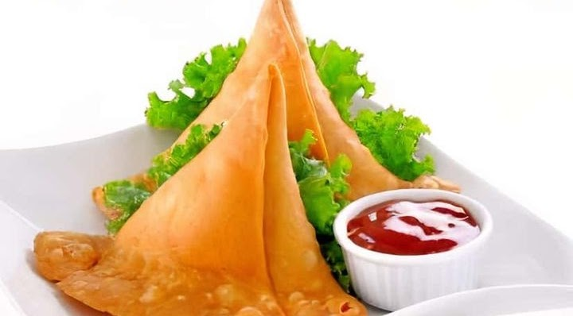

Kingfish & fish thalisRice, chapati, rava or tawa fry, sol kadhi and comforting sides.
Fish thalis with sol kadhi, filling biryani, Andhra comfort meals, crispy starters, breakfast snacks and homestyle curries — all made easy to browse, select and order on WhatsApp.


Clean taste, generous plates, quick ordering and prices that make sense for regular lunches, office breaks and takeaway dinners.
Rice, chapati, curries, papad, pickle, salad and sol kadhi options.

Bangda, lepo, kingfish, chonak, modso, prawns and pomfret options.

Pav, paratha, toast, patties, rolls, bhajji and breakfast plates.
Select dishes, fill name, dine-in or takeaway, payment mode, then send.
Open the map, call the restaurant, or place your order before you arrive.





